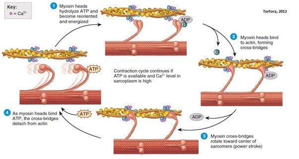
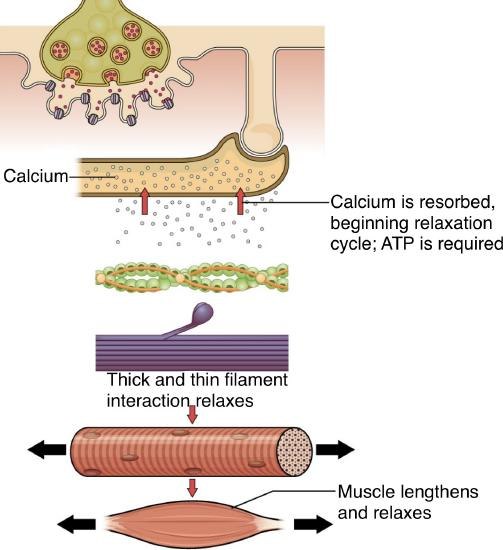
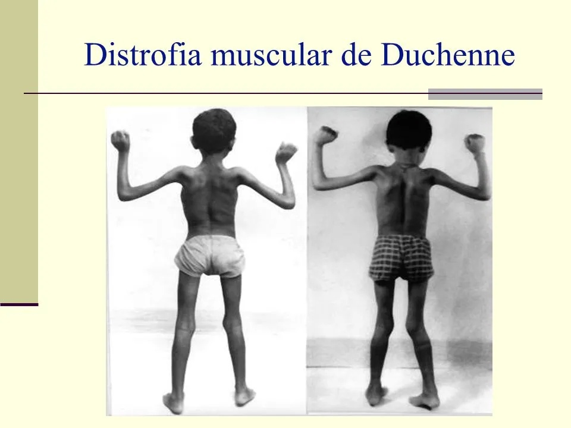

Anatomi Makroskopis Otot Rangka
Sistem muskular merupakan alat gerak aktif yang menghasilkan gerakan melalui kontraksi otot. Kontraksi otot menghasilkan gaya yang diteruskan ke tulang melalui tendon, sedangkan tulang berperan sebagai alat gerak pasif. Selain menghasilkan gerakan, sistem muskular berperan dalam mempertahankan postur, menstabilkan sendi, menghasilkan panas, dan menyimpan glikogen. Tubuh manusia memiliki lebih dari 600 otot yang secara keseluruhan menyusun sekitar 40–50% berat tubuh. Aktivitas otot juga berkaitan erat dengan sistem saraf dalam mengatur kontraksi dan relaksasi.

🟥 Otot Rangka
Melekat pada tulang dan bekerja secara sadar (volunter). Kontraksinya menghasilkan berbagai gerakan tubuh serta mempertahankan posisi tubuh.
- Melekat pada tulang
- Bekerja secara sadar
- Serat panjang dan tidak bercabang
- Multinukleat (banyak inti)
- Memiliki striasi (garis gelap-terang)
🟨 Otot Polos
Ditemukan pada dinding organ dalam seperti usus, lambung, dan pembuluh darah. Bekerja secara tidak sadar (involunter).
- Terdapat pada organ dalam
- Bekerja tidak sadar
- Tidak memiliki pola striasi
🟦 Otot Jantung
Hanya ditemukan pada dinding jantung dan bekerja secara tidak sadar secara ritmis untuk memompa darah ke seluruh tubuh.
- Hanya terdapat di jantung
- Bekerja tidak sadar
- Berkontraksi secara ritmis

🧫 Ciri Histologis Otot Rangka
| Ciri | Keterangan |
|---|---|
| Serat | Panjang, silindris, tidak bercabang |
| Nukleus | Banyak / multinukleat (sinkitium) |
| Posisi Nukleus | Perifer, tepat di bawah sarkolema |
| Striasi | Pita A gelap dan pita I terang |
| Jaringan Pendukung | Mengandung pembuluh darah & serabut saraf di semua lapisan |
Struktur Mikroskopis Serat Otot
Serat otot rangka berbentuk silindris panjang dan di dalamnya terdapat miofibril yang tersusun memanjang. Miofibril menghasilkan pola pita gelap dan terang yang menjadi ciri khas otot rangka. Sistem membrannya terdiri atas sarkolema, tubulus T, dan retikulum sarkoplasma yang berperan dalam penghantaran rangsangan dan kontraksi.

📱 Sarkolema
Klik untuk melihat detail membran plasma serat otot.
🔌 Tubulus T & Triad
Klik untuk melihat jalur depolarisasi dan struktur triad.
💧 Retikulum Sarkoplasma
Klik untuk melihat sistem penyimpanan kalsium.
🧵 Miofibril & Miofilamen
Klik untuk melihat struktur kontraktil aktin & miosin.
Struktur Molekuler Sarkomer
Sarkomer adalah unit kontraktil terkecil yang membentang dari satu garis Z ke garis Z berikutnya. Filamen tidak memendek; aktin dan miosin bergeser relatif sehingga garis Z mendekat, pita I serta zona H memendek, sedangkan pita A relatif tetap.


Miosin
Aktin
Titin
Troponin & Tropomiosin
Garis Z & Garis M
Pita A, Pita I & Zona H
Pita A: Daerah gelap (filamen tebal), panjang tetap.
Pita I: Daerah terang (filamen tipis), memendek saat kontraksi.
Zona H: Pusat pita A, memendek/menghilang saat kontraksi.
Tautan Neuromuscular & Asetilkolin
Neuromuscular junction (NMJ) merupakan sinapsis khusus yang menghubungkan neuron motorik dengan serat otot rangka melalui neurotransmiter asetilkolin (ACh). NMJ mengubah impuls listrik dari neuron motorik menjadi potensial aksi pada serat otot.
1. Struktur Anatomi NMJ

Presynaptic Terminal
Ujung neuron motorik, mengandung vesikel sinaptik berisi ACh, mitokondria, dan kanal Ca²⁺ berpintu tegangan.
Synaptic Cleft
Celah 30-50 nm berisi lamina basalis dan enzim asetilkolinesterase (AChE) untuk menguraikan ACh.
End Plate / Postsynaptic
Membran otot dengan lipatan junksional (junctional folds) terkonsentrasi reseptor ACh nikotinik.
2. Tahapan NMJ dan Pelepasan Asetilkolin

Sliding Filament Theory
Kontraksi otot terjadi melalui pergeseran relatif filamen aktin dan miosin. Filamen tidak mengalami pemendekan, tetapi aktin bergeser menuju pusat sarkomer melalui siklus interaksi kepala miosin dengan aktin yang membutuhkan energi ATP.


| Struktur | Saat Kontraksi | Keterangan |
|---|---|---|
| Garis Z | Mendekat | Panjang sarkomer memendek |
| Pita I | Memendek | Daerah aktin murni berkurang |
| Zona H | Memendek / Hilang | Aktin saling menumpuk di pusat |
| Pita A | Relatif Tetap | Panjang miosin tidak berubah |
| Filamen Aktin & Miosin | Tidak Memendek | Hanya bergeser relatif |

Relaksasi Otot & Pompa Kalsium
Relaksasi terjadi setelah stimulasi berhenti dan konsentrasi Ca²⁺ di sitoplasma menurun. Ca²⁺ dikembalikan ke retikulum sarkoplasma melalui pompa SERCA dengan menggunakan energi ATP sehingga interaksi aktin dan miosin terhenti.


1. Stimulasi Berhenti
Pelepasan ACh di NMJ terhenti.
2. Repolarisasi
Membran sarkolema kembali ke keadaan istirahat.
3. SERCA Mengambil Ca²⁺
Pompa SERCA aktif memompa Ca²⁺ masuk ke RS menggunakan ATP.
4. Ca²⁺ Lepas dari Troponin
Konsentrasi Ca²⁺ sarkoplasma menurun drastis.
5. Tropomiosin Menutup Aktin
Binding site aktin kembali terhalangi.
6. Tegangan Turun
Cross-bridge terhenti dan otot mengalami relaksasi.
Sumber Energi Kontraksi
ATP merupakan sumber energi langsung untuk siklus cross-bridge dan kerja pompa SERCA. Karena cadangan ATP terbatas, otot meregenerasi ATP melalui tiga jalur metabolik utama.
⚡ Jalur Fosfagen / Fosfokreatin
Sangat Cepat | Tanpa Oksigen
Kreatin fosfat mentransfer gugus fosfat ke ADP melalui enzim kreatin kinase. Bertahan sekitar 15 detik pada aktivitas maksimal.
🔥 Glikolisis Anaerobik
Cepat | Tanpa Oksigen
Memecah glukosa di sitoplasma menjadi asam piruvat, menghasilkan 2 ATP. Jika O₂ kurang, piruvat diubah menjadi asam laktat. Bertahan ~1 menit.
🌱 Respirasi Aerobik
Lambat & Berkapasitas Besar | Butuh O₂
Berlangsung di mitokondria memecah piruvat, asam lemak, atau asam amino. Menghasilkan 32-36 ATP. Menopang aktivitas berjam-jam.
Kedutan, Sumasi, Tetanus & Kelelahan


📈 Kedutan Otot (Twitch)
Respons mekanik tunggal terhadap satu potensial aksi. Terdiri dari 3 fase: Fase Laten, Fase Kontraksi, dan Fase Relaksasi.
📊 Sumasi & Tetanus
Sumasi: Stimulus berulang sebelum relaksasi selesai meningkatkan tegangan.
Tetanus: Frekuensi stimulus tinggi menghasilkan kontraksi konstan tanpa relaksasi.
🔋 Kelelahan Otot (Fatigue)
Penurunan kinerja otot akibat akumulasi Fosfat Anorganik (Pi), gangguan ion K⁺ di tubulus T, penurunan sensitivitas kalsium, dan kelelahan sentral.
Kelainan Sistem Otot
Kelainan sistem otot dapat mengganggu struktur, penghantaran sinyal NMJ, hingga fungsi regenerasi jaringan otot yang berujung pada kelemahan atau penyusutan massa otot.

🧬 Distrofi Otot Duchenne (DMD)
Penyakit genetis kelainan protein distrofin yang menghubungkan miofibril ke sarkolema. Menyebabkan kelemahan otot progresif sejak masa kanak-kanak.

🧠 Miastenia Gravis (MG)
Penyakit autoimun yang merusak reseptor ACh di NMJ, menyebabkan kelemahan otot mata (ptosis, diplopia), otot wajah, dan ekstremitas.

🦠 Tetanus
Infeksi bakteri penghasil toksin yang menyerang NMJ, memicu kontraksi otot kaku terus-menerus terutama pada rahang (lockjaw) dan leher.

🦴 Tendinitis
Peradangan pada tendon akibat gerakan berulang berlebihan (seperti tennis elbow). Sembuh lambat karena keterbatasan suplai darah.
Simpulan
Sistem muskular merupakan alat gerak aktif yang terorganisasi dari tingkat makroskopis hingga molekuler. Kontraksi terjadi akibat pergeseran filamen aktin dan miosin (sliding filament theory) yang dipicu pelepasan Ca²⁺ dari RS setelah mendapat rangsangan dari NMJ melalui asetilkolin. Energi disuplai oleh ATP dari jalur fosfagen, glikolisis, dan respirasi aerobik.
Saran
Diharapkan pembaca dan mahasiswa dapat memahami interaksi terintegrasi antara sistem saraf dan otot serta menjaga kesehatan sistem otot dari berbagai kelainan patologis.
📚 DAFTAR PUSTAKA
- Arnold, W. D., & Clark, A. (2023). Neuromuscular junction physiology and pathology. Journal of Physiology, 601(4), 789–802.
- Badawi, Y., & Nishimune, H. (2020). Structural and functional comparison of neuromuscular junctions in humans and rodents. Frontiers in Molecular Neuroscience, 13, 582.
- Barker, G., et al. (2024). Calcium handling and energetics in skeletal muscle contraction. Physiological Reviews, 104(2), 415–440.
- Fralish, M. S., et al. (2021). Anatomy, Muscle Assessment and Neuromuscular Junction. StatPearls Publishing.
- Ginting, R., et al. (2022). Anatomi dan Fisiologi Tubuh Manusia. Bandung: Media Sains Indonesia.
- Herzog, W. (2024). The sliding filament theory and cross-bridge mechanics: 70 years of progress. Journal of Biomechanics, 162, 111890.
- Iyer, C. C., et al. (2021). Neuromuscular junction development and maintenance. Cells, 10(9), 2310.
- Madri, M. (2017). Anatomi dan Fisiologi Manusia untuk Mahasiswa Olahraga. Padang: Sukabina Press.
- Mustafa, A. (2023). Fisiologi Olahraga dan Aktivitas Fisik. Jakarta: Rajawali Pers.
- Nishimune, H., & Shigemoto, R. (2019). Active zone architecture and neurotransmitter release at the NMJ. Neuroscience Research, 141, 12–21.
- Putra, A. A., et al. (2022). Buku Ajar Anatomi Fisiologi Manusia. Yogyakarta: Deepublish.
- Ramadan, A., et al. (2025). Comparative morphology of mammalian motor endplates. Anatomical Record, 308(1), 112–125.
- Sousa-Soares, R., et al. (2023). Acetylcholine receptor dynamics at the neuromuscular junction. Molecular Brain, 16(1), 45.
- Sousa-Victor, P., et al. (2021). Muscle stem cell aging and regenerative failure in dystrophies. Nature Reviews Molecular Cell Biology, 22(11), 727–745.
- Toniolo, L., & Giacomello, E. (2020). Mechanisms of skeletal muscle fatigue: Metabolic and ionic factors. International Journal of Molecular Sciences, 21(18), 6741.
- Wang, Q., et al. (2024). Excitation-contraction coupling mechanisms in human skeletal muscle. Cellular Physiology and Biochemistry, 58(3), 201–218.
- Wang, Y., & Liu, X. (2026). Cross-bridge kinetics and ATP hydrolysis in muscle force generation. Biophysical Journal, 131(2), 340–352.
- Wangko, S. (2014). Jaringan Otot Rangka: Sistem Membran dan Struktur Halus Unit Kontraktil. Jurnal Biomedik (JBM), 6(2), S27–S32.